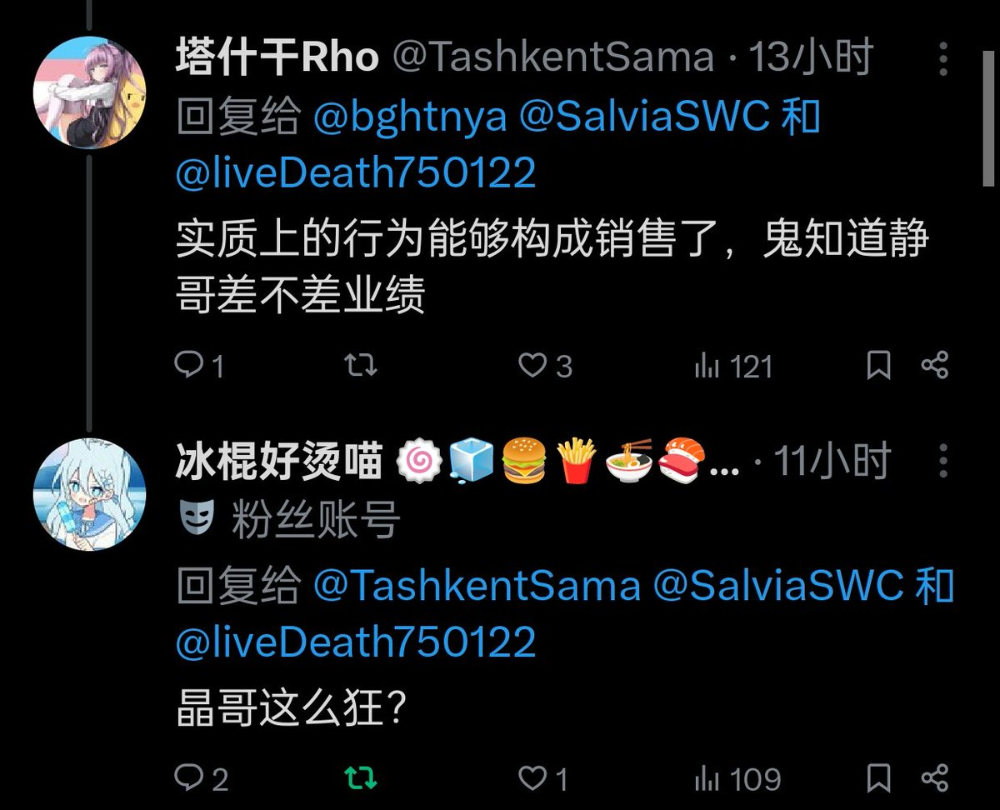

Jahseh
@godspeedyou50
@RosaritaCisner @Edward_8964 名言了 晶哥这么狂？ 你晶哥玩你就是猫玩耗子 三体人干地球啊
随便买你一份倒查你窝点
“说 账本藏哪了”
闲的没事干整整你咋了 又没有专门给你送命或随时跑路的发货员
太天真了
——来自Jahseh本人 我至少蹲地上指过板子 我知道天有多高，我现在接到95110的反诈宣传来电我特么都一哆嗦

Yameii
@RosaritaCisner
@godspeedyou50 @Edward_8964 https://t.co/WUMgHXmMgr